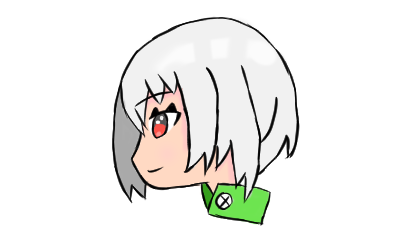

TextLoid
2022.12.27
合成音声ソフト「VOICEROID」で音声保存を楽にするためのソフトです。
初めて作成したソフトで、できる限りわかりやすくなるように作成しました。
元々は友人に頼まれ作成しました。その流れでソフト化してみました
合成音声ソフト「VOICEROID」で音声保存を楽にするためのソフトです。
初めて作成したソフトで、できる限りわかりやすくなるように作成しました。
元々は友人に頼まれ作成しました。その流れでソフト化してみました